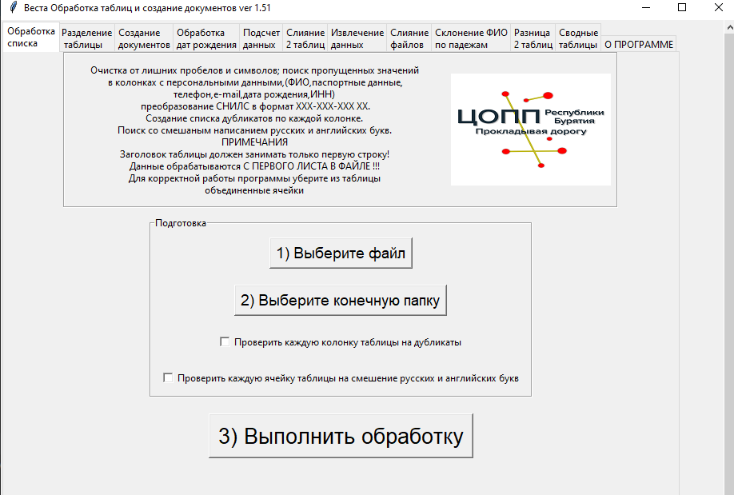

Назначение программы
Программа предназначена для автоматизации некоторых рутинных задач, возникающих при работе документами docx и таблицами xlsx (программа работает со всеми офисными пакетами, поддерживающими эти форматы).
Целевой аудиторией программы являются люди, не имеющие доступа к специализированным информационным системам
и не обладающие достаточным уровнем владения текстовыми и табличными процессорами для того, чтобы работать со сводными таблицами, Power Query, макросами.
Программа внесена в реестр отечественного программного обеспечения.
Ссылка на свидетельство РоспатентаСсылка на запись в реестре отечественного ПО
Что может программа
- Создавать однотипные документы docx (договора, справки, удостоверения, благодарности и т.п.)
- Обрабатывать колонки с датами рождения (вычисление текущего возраста,разбиение по категориям 1-ПК,1-ПО,СПО-1)
- Вычисление частот и базовых количественных статистик по всем колонкам таблицы
- Сравнение и объединение 2 таблиц по нескольким колонкам (для тех кто не умеет использовать ВПР)
- Извлечение данных из таблиц xlsx со сложной структурой
- Массовое объединение таблиц со списочной структурой в одну
- Склонение ФИО по падежам, создание инициалов
- Поиск различий между двумя таблицами с одинаковой структурой
- Разделение таблицы на несколько частей по уникальным значениям выбранной колонки
- Очистка списка от ошибок (поиск неправильно записанных паспортных данных,СНИЛС,ИНН, очистка от лишних пробелов, поиск слов со смешаным написанием русских и английских букв)
- Простые сводные таблицы
Входные данные
Программа использует в своей работе файлы формата xlsx (Excel или его аналоги) и файлы формата docx (Word и его аналоги)
Программа не использует в своей работе какие либо базы данных
Выходные данные
В папке которую выбирает пользователь создаются файлы формата xlsx и docx
Интерфейс пользователя
При работе с программой используется графический интерфейс
Совместимость
Операционная система: Windows 7, Windows 8 / 8.1, Windows 10 и выше, Linux -системы (Ред ОС, Астра Линукс, Альт Линукс и т.п.).
Безопасность
Программа работает локально, не использует локальную сеть или сеть Интернет.
Исходные файлы xlsx и docx пользователя не изменяются программой.
Удобство использования
В интерфейсе программы используются вкладки, на каждой из вкладок находится все что нужно для работы конкретной функции программы.
В программе не используются меню различной степени вложенности, все шаги которые нужно выполнить пользователю пронумерованы по порядку.
Интерфейс ориентирован на пользователей с невысоким уровнем компьютерной грамотности.
Поддержка
Предложения, замечания по работе программы отправлять на почту itdarhan@yandex.ru
Скачать
Чтобы начать работу скачайте инструкцию.
Скачать инструкцию по установке и началу работыВ руководстве пользователя вы найдете подробное пошаговое руководство по работе с каждой из функций программы.
Скачать руководство пользователяСкачайте и распакуйте архив с примерами. Персональные данные используемые в примерах, являются искусственно сгенерированными.
Скачать данные для примера.Выберите нужную версию Весты для скачивания.
Скачать версию Веста для Windows x64Скачать версию Веста для Windows x32
Скачать версию Веста для Linux